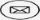
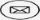

Pejabat Pertubuhan Peladang Kawasan Pelagat
Kampung Padang Luas,22000 Jerteh,Terengganu,Terengganu Darul Iman.
+096902101 +096902102  ppk_pelagat@yahoo.com.myKampung Padang Luas,22000 Jerteh,Terengganu,Terengganu Darul Iman.
+096902101 +096902102  ppk_pelagat@yahoo.com.my